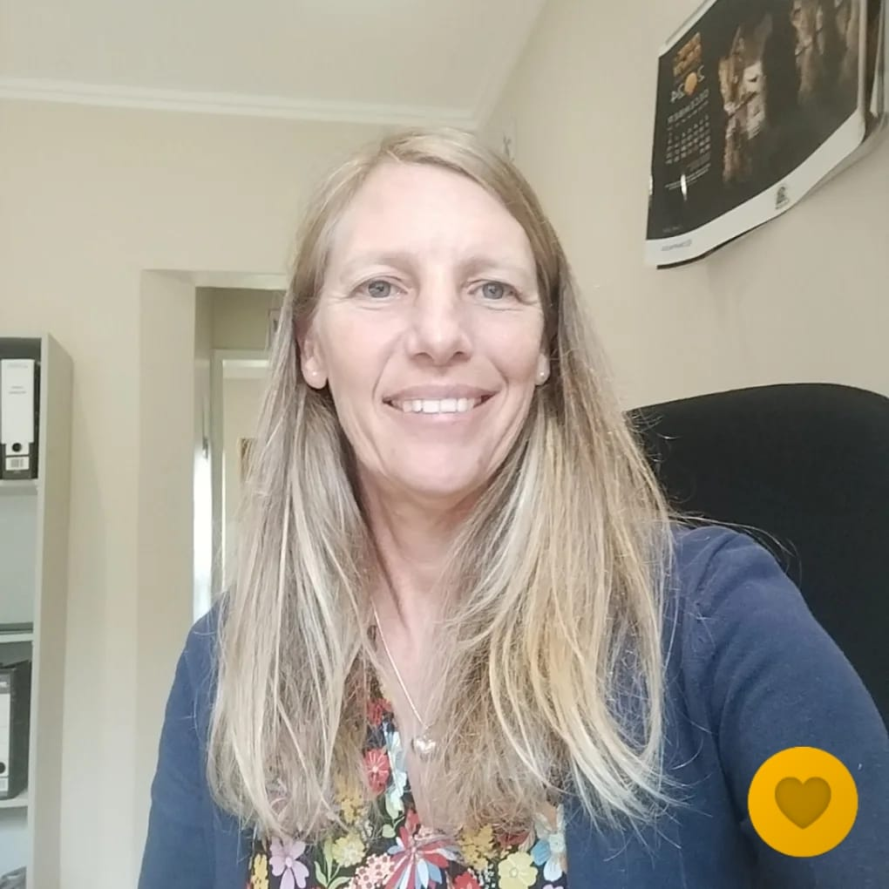
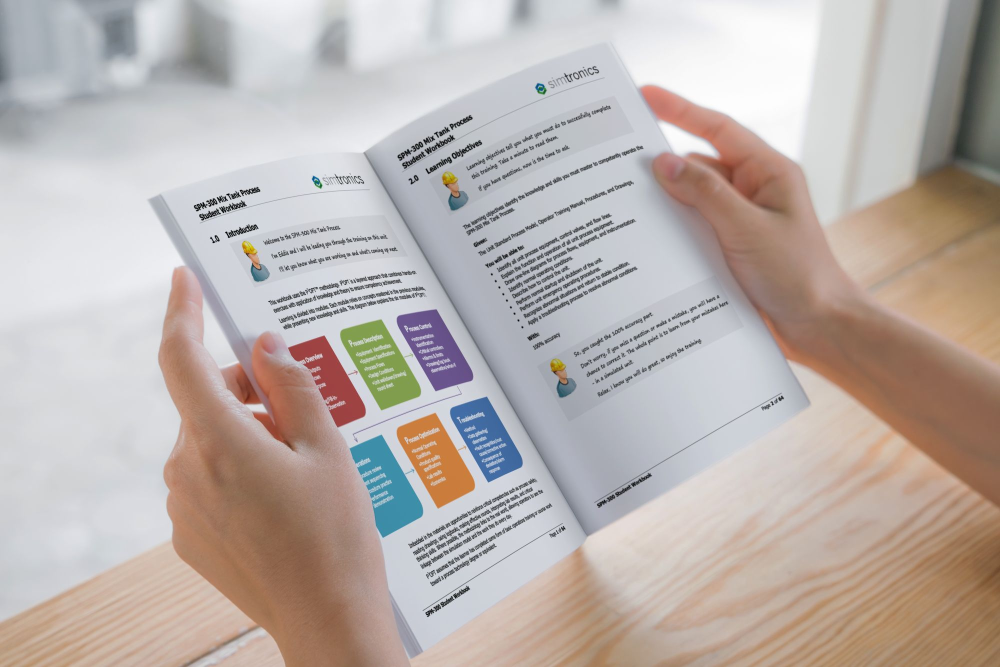
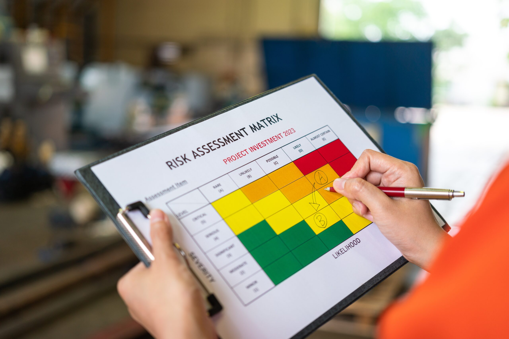

About

I grew up in the KZN Midlands and studied locally before spending
several years abroad. I loved the experience but there is nothing
quite like living in South Africa, particularly in the picturesque
Midlands, where I currently reside with my husband and 6 children.
My professional path has been deeply rooted in Quality Management
Systems and Laboratory Management, where I have refined my
expertise in process enhancement, meticulous attention to detail,
and effective team leadership.
I am presently expanding my skill set to encompass Full Stack Web
Development and Software Engineering. This new endeavor enables me
to apply my analytical acumen and organizational prowess within
the dynamic realm of technology.
Skills
I am neat, well-organized, and enjoy investigative thought and
problem-solving. I prefer to be engaged in a variety of activities
over a working day and function quietly but efficiently, setting
very high standards for myself.
I am eager to develop my skill set to include more
technology-focused roles, combining my background in quality
management systems with cutting-edge software development
practices. My goal is to contribute to innovative projects that
require both technical expertise and a meticulous approach to
problem-solving.

Competencies
Development of QMS
Staff Training
Document Control
Risk Assessment
Internal Auditing
Team Leadership
Recent Work Experience
Midlands Laboratory - Quality Manager: ISO/IEC 17025
Feb 2019 - Current
Dairy Day - Laboratory and Quality Manager: FSSC 22000
Nov 2013 - Dec 2018
Westfalia Fruit Products - Quality Manager: HACCP
May 2008 - Oct 2013
Education
My educational journey began in the KZN Midlands, where I
completed my secondary education in Howick in 1991. I then pursued
a Bachelor's degree in Architecture (B Arch) at the University of
Natal, Durban, from 1992 to 1995. Although I enjoyed the creative
aspects of architecture, I found the business side less appealing
due to my introverted nature.
Encouraged by my family's deep roots in education, I explored the
sciences, earning a Bachelor's degree in Agriculture (BSc Agric)
from 1996 to 1999, followed by a Master's degree in Botany from
2000 to 2001, both from the University of Natal, Pietermaritzburg.
After dedicating a decade to academic pursuits, I took a six-year
break to travel extensively throughout Europe, gaining valuable
life experiences.